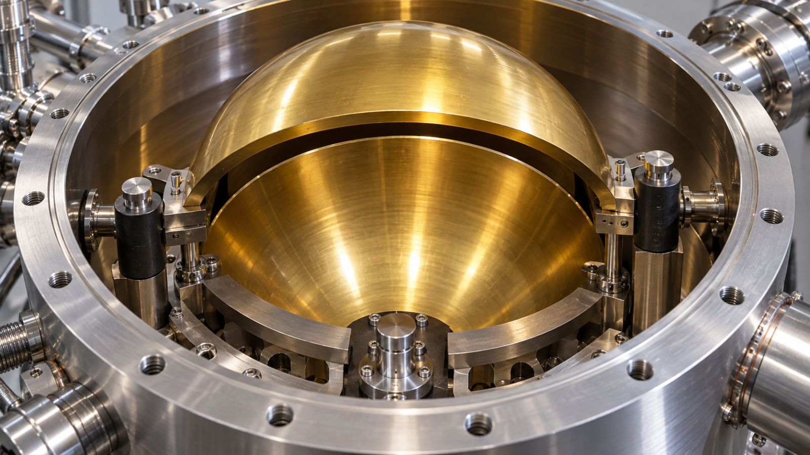
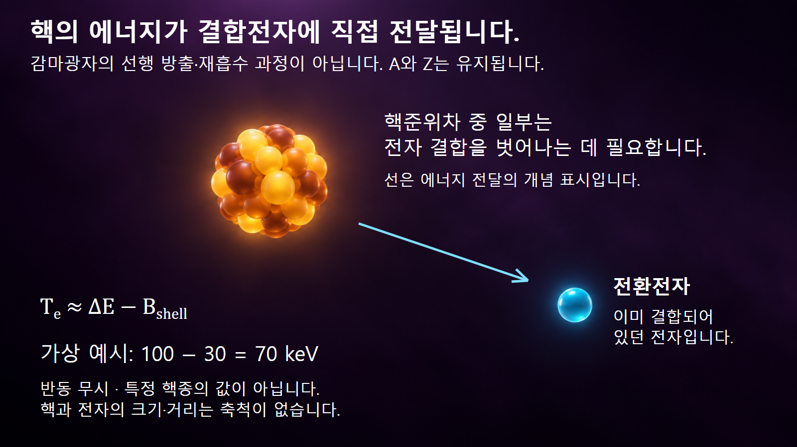
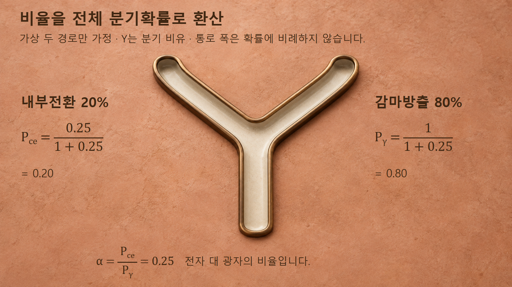

방사성붕괴와 시간 · 047
내부전환
핵의 에너지를 직접 받는 결합전자

내부전환은 핵의 여기 에너지가 전자에 전달되는 경로입니다. 전자 에너지의 차감과 전환계수의 분모를 구분하면 붕괴자료를 정확히 읽을 수 있습니다.
광자를 거치지 않는 전자의 방출
내부전환은 여기된 원자핵이 낮은 에너지 상태로 이동할 때, 그 에너지를 원자에 결합된 전자에 직접 전달해 전자를 방출하는 과정입니다. 핵의 양성자수나 중성자수는 바뀌지 않으므로 원자번호 Z와 질량수 A가 유지됩니다. 다만 전자 하나가 빠져나가 원자의 전하상태가 달라질 수 있습니다.
DOE의 내부전환 연구 소개는 감마방출과 전자 방출을 여기된 핵이 에너지를 잃는 서로 다른 경로로 설명합니다. 감마광자가 먼저 만들어진 뒤 같은 원자의 전자에 다시 흡수되는 광전효과로 해석하면 발생 순서를 잘못 이해하게 됩니다.
이 전자는 베타붕괴에서 새로 만들어지는 전자가 아니라 원자에 이미 결합되어 있던 전자입니다.

전자 결합에너지와 운동에너지의 차감
핵이 내놓는 준위차를 ΔE, 포획이 아니라 방출되는 전자의 결합에너지를 Bshell이라고 하겠습니다. 결합에너지는 전자를 원자에서 떼어내는 데 필요한 양을 양수로 나타낸 것입니다. 반동을 무시하면 전환전자의 운동에너지는 Te ≈ ΔE − Bshell입니다.
NNDC의 감마방출·내부전환 안내는 핵준위 차이에서 해당 껍질의 결합에너지를 빼는 관계를 제시합니다. 같은 핵전이라도 K껍질, L껍질 등 전자가 출발한 껍질이 다르면 결합에너지가 달라져 전환전자 에너지도 달라집니다. CE-K라는 표시는 K껍질 전환전자라는 뜻입니다.
특정 껍질의 결합에너지가 준위차보다 크면 그 껍질 전자를 바깥으로 내보내는 단순한 경로는 에너지상 열리지 않습니다. 그렇다고 결합에너지가 더 작은 다른 껍질이나 다른 전이까지 모두 막혔다고 결론내릴 수는 없습니다. 전자의 시작 상태를 명시해야 식의 의미가 정해집니다.
예시 1: 100keV 전이에서 전자 에너지 계산
가상 핵전이의 준위차를 100 keV, 해당 껍질 전자의 결합에너지를 30 keV라고 가정하겠습니다. 먼저 핵이 내놓는 100 keV에서 결합을 벗어나는 데 필요한 30 keV를 빼면 전환전자 운동에너지는 약 70 keV입니다. 이 값은 반동을 무시한 계산이며 특정 핵종의 실제 평가값이 아닙니다.
같은 100 keV 전이에서 결합에너지가 5 keV인 다른 껍질의 전자가 방출된다면 운동에너지는 약 95 keV입니다. 두 전자의 에너지 차이 25 keV는 핵준위가 달라서가 아니라 출발 껍질의 결합에너지가 달라서 생깁니다.
핵이 내놓은 에너지와 검출되는 전자 에너지를 곧바로 같다고 놓으면 70 keV를 핵준위 차이로 잘못 읽게 됩니다. 반대로 측정한 전자의 출발 껍질을 알면 결합에너지를 더해 전이 에너지를 추정할 수 있습니다. 정밀 해석에서는 반동·전자상태 등의 보정과 실제 평가자료가 필요합니다.
예시 2: 내부전환계수와 전체 분기확률
내부전환계수 α는 같은 핵전이에 대한 전환전자 방출확률 Pce를 감마선 방출확률 Pγ로 나눈 비율입니다. IAEA 붕괴자료집의 기호 설명 23~24쪽은 광자 방출확률, 전환전자 방출확률과 둘을 합친 전이확률을 구분합니다. α는 단위가 없으며 1보다 커질 수도 있습니다.
가상으로 감마방출과 내부전환 두 경로만 있고 α=0.25라고 하겠습니다. 전환전자 대 광자 비율이 1:4이므로 전체 다섯 몫 중 전환은 한 몫입니다. 식으로 쓰면 Pce = α/(1+α) = 0.25/1.25 = 0.20이며, Pγ = 1/(1+α) = 0.80입니다.
따라서 α가 0.25라는 말은 전체 전이의 25%가 내부전환이라는 뜻이 아닙니다.

같은 조건에서 전이 1,000회의 기대값은 전환 200회, 감마방출 800회입니다. 실제 관측계수에는 통계적 변동과 서로 다른 검출효율이 더해집니다. 또 추가 경쟁 경로가 있으면 전체 확률의 분모를 다시 정의해야 하므로 이 두 경로 공식을 그대로 적용하지 않습니다.
전자 빈자리와 뒤따르는 X선
전환전자가 떠난 껍질에는 빈자리가 남습니다. 다른 전자가 낮은 상태를 채우는 재배열은 특성 X선이나 오제전자 방출로 이어질 수 있습니다. 전환전자 방출은 핵준위의 에너지 전달이 원인이며, 오제전자 방출은 그 뒤의 전자껍질 재배열에 관련됩니다.
DOE가 소개한 2017년 연구에서는 전자 빈자리가 채워질 때의 X선과 감마선의 상대 세기를 활용해 내부전환계수를 정밀하게 검증했습니다. 같은 검출기로 광자 신호들을 비교하는 방식은 전자와 감마선을 서로 다른 장비로 단순 비교할 때 생기는 문제를 줄이는 데 활용됐습니다.
이 사례가 모든 X선 하나를 곧바로 전환전자 하나로 세어도 된다는 뜻은 아닙니다. 껍질별 전환확률, X선 형광수율과 검출효율을 함께 다루어야 합니다. 원자 재배열을 검출 신호로 이용한다는 원리와 구체적인 보정 절차는 구분합니다.
붕괴자료와 계측 해석의 연결
핵자료에서 감마선 방출확률만 읽으면 광자가 나오지 않는 전이 경로를 빠뜨릴 수 있습니다. 전환계수와 껍질별 전자 에너지는 전체 전이확률을 계산하고 전자 에너지 침적을 해석하는 데 필요합니다. 핵의학이나 방사선 계측에서 붕괴도에 전자와 광자를 함께 기록하는 이유입니다.
전환계수는 핵종 이름 하나로 고정되는 만능 상수가 아닙니다. 해당 전이 에너지, 전자껍질, 전이의 성격을 지정해야 하며, 한 준위에 여러 전이가 있으면 각각을 구분합니다. 이 글의 α=0.25와 100 keV는 개념 계산을 위해 정한 값입니다.
내부전환과 전자포획은 이름이 비슷해도 전자의 역할이 반대입니다. 전자포획에서는 전자가 핵반응에 참여하고 Z가 줄며, 내부전환에서는 결합전자가 방출되지만 핵의 Z는 유지됩니다. 이 구별을 먼저 하면 방출전자·X선·감마선의 순서를 더 명확히 읽을 수 있습니다.
전자 관련 과정의 구분
같은 전자 검출 신호라도 발생 과정은 달라질 수 있습니다. 전자의 시작 상태, 에너지 공급원, 핵의 원자번호 변화를 함께 보면 베타붕괴·내부전환·오제전자를 구별할 수 있습니다. 측정값을 핵준위나 활동도로 바꾸기 전에 아래 구분을 적용합니다.
| 과정 | 전자의 기원 | 핵의 Z 변화 |
|---|---|---|
| 베타 마이너스 붕괴 | 약한 상호작용에서 생성 | +1 |
| 내부전환 | 기존 결합전자 | 없음 |
| 오제전자 방출 | 전자껍질 재배열로 방출 | 그 과정 자체로는 없음 |
| 전자포획 | 기존 전자를 포획 | −1 |